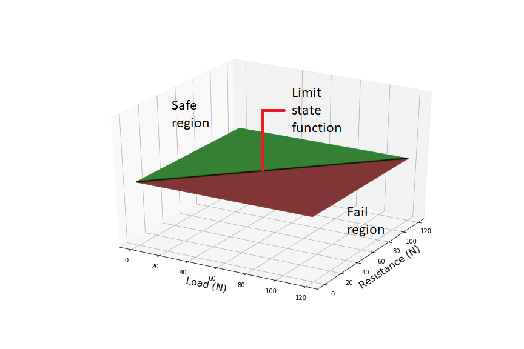
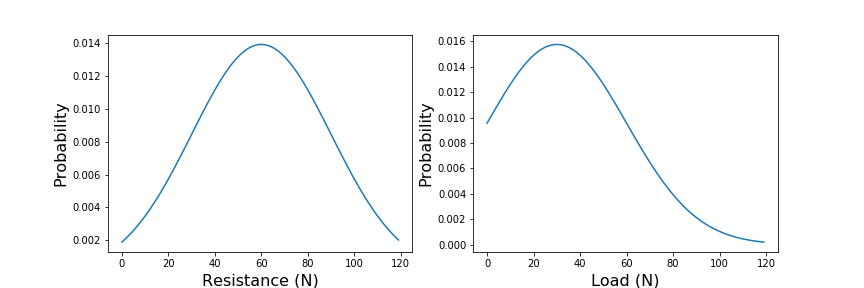
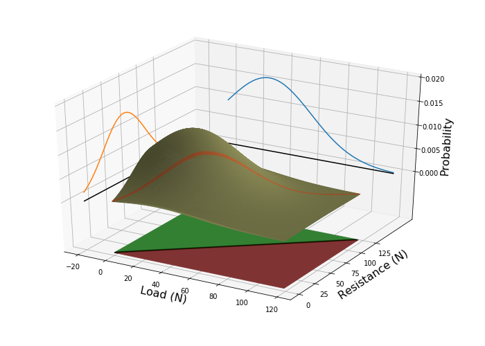

VaP is a software application that supports statistical thinking. Many engineering problems can only be expressed in probabilistic terms: for instance, we may have to design a structural element to withstand some future event. We don’t know how violent that event will be, but we have a statistical description of previous impacts. Likewise, we might not know how strong the structural element is without actually breaking it, but we do have a statistical distribution for similar parts from the same batch. To understand how likely the structure is to fail, we need to understand the combination of these two statistical distributions. Unfortunately, intuitive estimates of joint and conditional probabilities tend to be poor, and people are notoriously bad at predicting outcomes based uncertain evidence. The VaP tool lets the user deal with multiple random variables, rigorously evaluates contingencies and presents the results in probabilistic terms.
Consider a trivial example: a beam of resistance R, is loaded with a force S. If the load exceeds the resistance, i.e. R S, then the beam will fail. We can plot all the possible combinations of strength and load, Figure 1. The failure region, i.e. those combinations of R and S for which the beam will fail, lie on one side of the line R-S=0, and the safe region lies on the other. We call this line the Limit State Function.
Now, assume that we know that structural elements from the same batch have a statistical distribution of resistances, centred around 30 Newtons, Figure 2. Furthermore, we know that most loads occur around 60 Newtons, but occasionally we will get a higher load. What is the probability that the beam will fail? To know this, we must consider the joint probability of R and S, Figure 3. The probability of failure, is the sum of probabilities in the failure region. In more mathematical terms, this is the integral of the joint probability function over the region bounded by the limit state function, (Eq.1). In this trivial example, it is easy to understand what is happening, but surprisingly difficult to estimate the probability of an event intuitively. Things get more complicated if there are many variables—as there usually are, or if they are correlated with one another.
 The Variables Processor (VaP) was developed by Dr. Petschacher at ETH Zürich in the early 1990s as a teaching aid for structural engineering students. How¬ever, it proved useful and found its way into practical investigations. VaP was further developed at PEC, and is provided at cost for users as VaP 4.0. The VaP 4.0 software is written for the Microsoft .NET Framework 4.6.1 and must this be instal-led on the com¬pu¬ter. The .NET Framework redistributable package, dotnetfx.exe, is available as a stand-alone executable. A downsized version of VaP 4.0, FreeVaP, is of¬fered free of charge to readers of the monograph, "Introduction to Safety and Reliability of Structures" , published in IABSE SED 5, 3rd Edition.